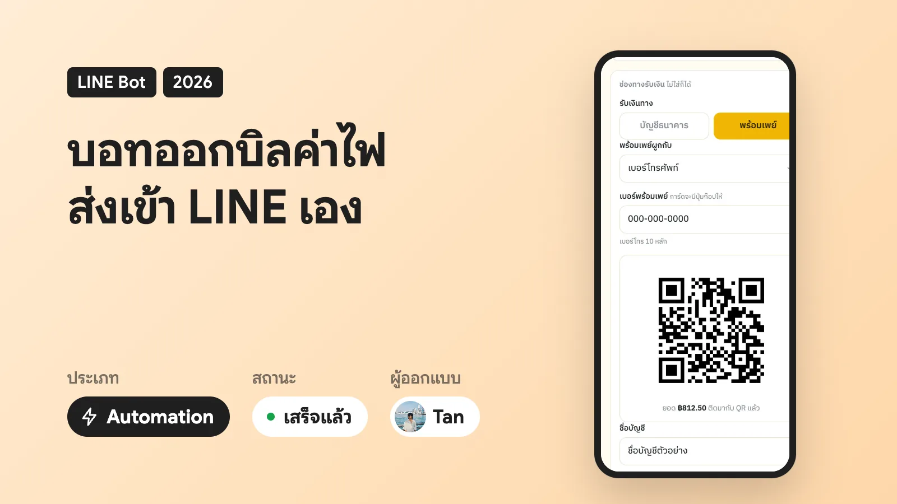
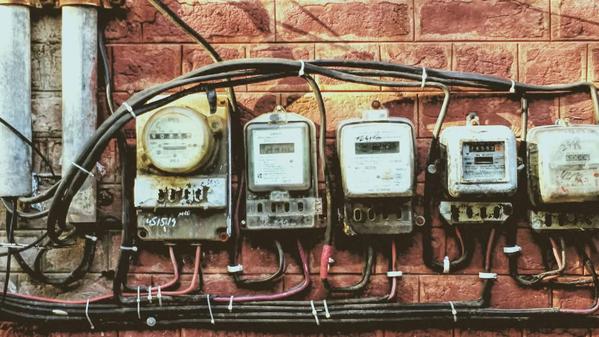
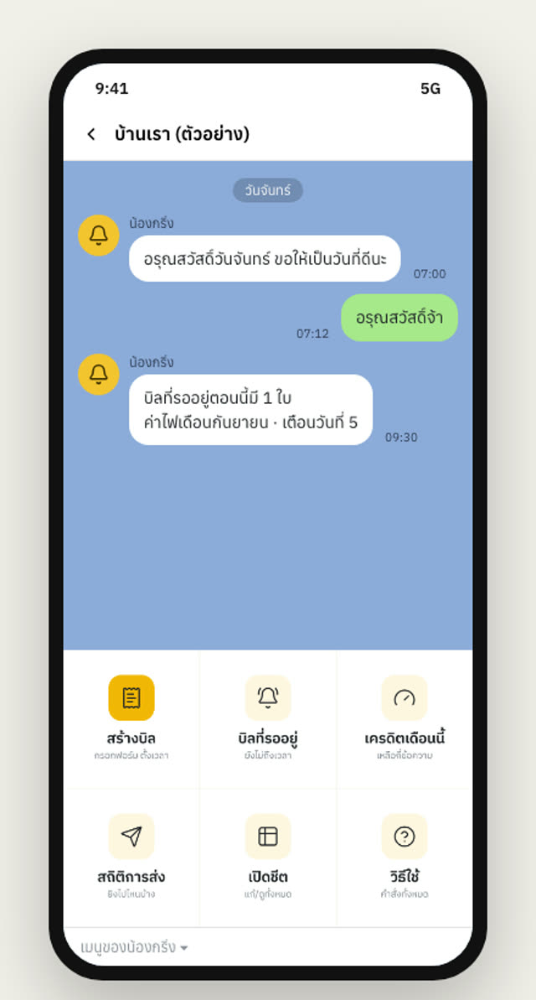
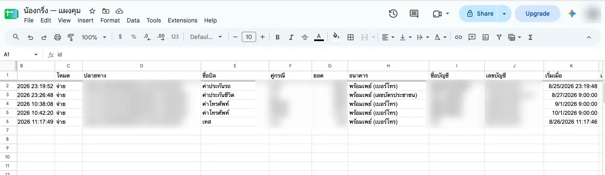
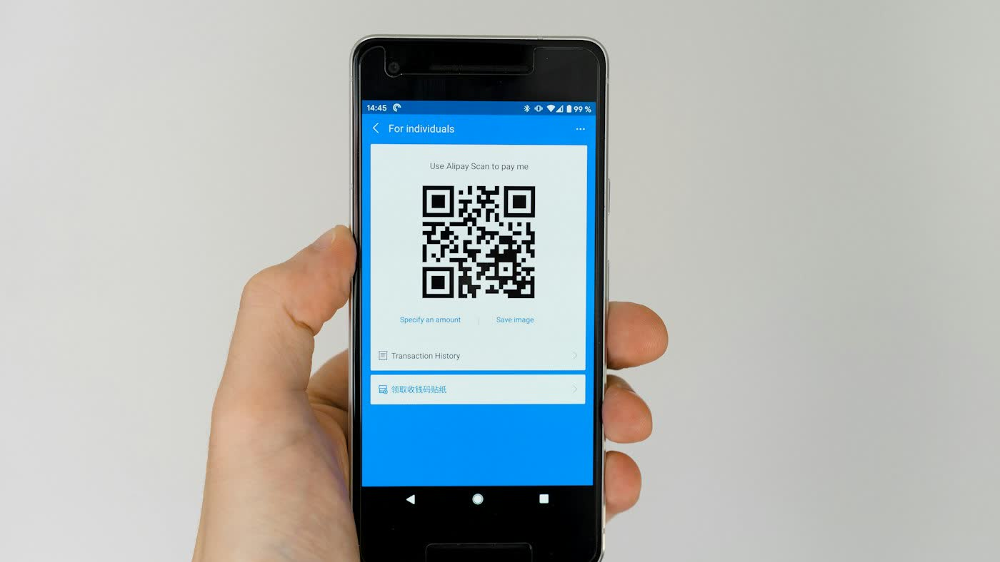

น้องกริ่ง
บอทที่เริ่มจากส่งรูปทักทายตอนเช้า แล้วถูกต่อยอดเป็นระบบออกบิลที่ทำงานเองทุกเดือน — ยอดตรวจย้อนได้ ผู้จ่ายแค่สแกน และไม่มีใครต้องเป็นคนจำหรือคนทวงอีกต่อไป

ใบแจ้งค่าไฟเข้าเมล → ยอดถูกลงชีตเป็นสูตรที่ตรวจย้อนได้ → วันที่กำหนด บิลพร้อม QR พร้อมเพย์ก็เด้งเข้า LINE ของคนที่ต้องจ่าย โดยไม่มีใครต้องเปิด PDF อ่านตัวเลขเองอีก และมีด่านตรวจ 6 ข้อกันไม่ให้บิลผิดหลุดออกไป
งานเดิมเป๊ะทุกเดือน แต่ต้องมีคนจำและมีคนกล้าทวง
ค่าไฟบ้านที่หารกันในครอบครัว มีขั้นตอนตายตัวทุกเดือน — และพังได้ทุกเดือนเหมือนกัน

ทุกเดือนต้องเปิดเมลหาใบแจ้งค่าไฟ อ่านยอดจากไฟล์ PDF คิดส่วนแบ่งในเครื่องคิดเลข พิมพ์ลงชีต แล้วไปพิมพ์ทวงในไลน์พร้อมแนบเลขบัญชี — ขั้นตอนไม่ยากเลยสักข้อ แต่มันต้องเกิดขึ้นครบทุกข้อ ทุกเดือน โดยมีคนคนหนึ่งเป็นคนจำ
ยอดอยู่ใน PDF ที่ต้องเปิดอ่านเอง
ใบแจ้งหนี้มาเป็นไฟล์แนบ ต้องเปิด อ่านตัวเลข แล้วพิมพ์ต่อด้วยมือ ซึ่งเป็นจุดที่ตัวเลขเพี้ยนได้ง่ายที่สุดในกระบวนการทั้งหมด
ส่วนแบ่งที่คิดในเครื่องคิดเลข ตรวจย้อนหลังไม่ได้
พิมพ์ผลลัพธ์ลงชีตไปเลย เดือนถัดไปกลับมาดูก็ไม่รู้แล้วว่าเลขนี้มาจากยอดเต็มเท่าไร คูณด้วยอะไร และปัดตอนไหน
การทวงเงินคนในบ้านมีต้นทุนทางความรู้สึก
ต่อให้ยอดถูกต้องและถึงกำหนดแล้ว การพิมพ์ทวงเองก็ยังเป็นเรื่องที่คนเลื่อนออกไปเรื่อย ๆ จนสุดท้ายกลายเป็นออกเงินแทนไปก่อนทุกเดือน
ส่งเลขบัญชีไปเฉย ๆ ผู้จ่ายต้องพิมพ์เองอีกต่อ
คนรับต้องคัดลอกเลขบัญชี สลับไปเปิดแอปธนาคาร วางเลข แล้วพิมพ์ยอดเอง ทุกขั้นคือโอกาสพิมพ์ผิดและโอกาสที่จะเลื่อนไปทำทีหลัง
ต่อยอดบอทที่บ้านใช้อยู่แล้ว แทนที่จะพาทุกคนไปลงแอปใหม่
ข้อจำกัดที่แท้จริงไม่ใช่เทคโนโลยี แต่คือ “คนในบ้านจะยอมเปิดอะไร”

| ทางเลือก | ผู้จ่ายต้องทำอะไร | ต้นทุน | เหตุที่ตก / รับ |
|---|---|---|---|
| แอปหารบิลสำเร็จรูป | โหลดแอป สมัคร เรียนรู้ | ฟรี/รายเดือน | ฟีเจอร์ครบเกินความจำเป็น แต่ต้องพาคนทั้งบ้านย้ายไปอยู่ในแอปที่ไม่มีใครเปิดอยู่แล้ว |
| พิมพ์ทวงเองเหมือนเดิม | ไม่ต้องทำอะไรใหม่ | แรงคนทุกเดือน | ได้ผลจริงเวลาที่ทำ ปัญหาคือมันขึ้นกับว่าเดือนนั้นคนคนหนึ่งจำได้และพร้อมจะทวงไหม |
| ต่อยอดบอท LINE เดิม เลือก | เปิด LINE แล้วสแกน QR | ไม่มี | บอทตัวนี้อยู่ในไลน์ที่บ้านอยู่แล้ว ผู้จ่ายไม่ต้องลงอะไรเพิ่ม และเส้นทางจ่ายสั้นที่สุดคือสแกน QR ที่มียอดล็อกมาให้แล้ว |
สองโปรเจกต์ที่คุยกันผ่านชีต ไม่ใช่ผ่าน API ของกันและกัน
ฝั่งหนึ่งรับผิดชอบ “ยอดถูกไหม” อีกฝั่งรับผิดชอบ “ส่งถึงไหม” และทั้งคู่แก้แยกกันได้โดยไม่พังข้ามฝั่ง

ห้ามส่ง LINE ลัดหลังบ้าน — งานอัตโนมัติทุกตัวต้องสร้าง record ในชีตบิลก่อนเสมอ แล้วปล่อยให้ตัวส่งเดิมที่ตื่นทุก 5 นาทีเป็นคนส่ง อัปเดตสถานะ และบันทึกผล ถ้ายอมให้มีทางลัดแม้แต่ทางเดียว ก็จะมีข้อความที่ส่งออกไปแล้วโดยไม่มีร่องรอยว่าใครส่งและส่งอะไร
วิธีทำงาน — 5 จังหวะ ตั้งแต่เมลเข้าถึงเงินเข้า
ทั้งหมดเกิดเองโดยไม่มีใครกดอะไร ความแม่นเวลาอยู่ที่ประมาณ 5 นาทีตามคาบของตัวจับเวลา


อ่านใบแจ้งจากเมล
ดึงยอดเต็มกับรอบบิลออกมาจากใบแจ้งอิเล็กทรอนิกส์ และจำเลขที่ใบแจ้งไว้กันประมวลผลใบเดิมซ้ำ
ลงชีตเป็นสูตร ไม่ใช่ตัวเลขสำเร็จ
เขียนลงไปในรูป =ยอดเต็ม*สัดส่วน โดยไม่ปัดยอดเต็มก่อนคูณ เดือนหน้าเปิดมาก็ยังเห็นที่มาของเลขทุกตัว
ผ่านด่านตรวจ 6 ข้อก่อนถึงจะออกบิล
ยังไม่พร้อมก็ไม่สร้างอะไรทั้งนั้น แล้วกลับมาลองใหม่รอบหน้า ดีกว่าออกบิลผิดไปหาคนในบ้าน
สร้าง QR พร้อมเพย์แยกใบตามยอดของแต่ละคน
ประกอบ payload ฝั่งเซิร์ฟเวอร์ที่เดียว หน้าเว็บมีหน้าที่แค่วาดออกมา ใส่ยอดแล้วยอดจะถูกล็อกมากับ QR เลย
ส่งการ์ดบิลเข้า LINE แล้วบันทึกผล
ปุ่มหลักคือเปิด QR เต็มจอ ไม่ต้องคัดลอกเลขบัญชี · บิลที่ไม่มี QR เท่านั้นจึงจะแสดงปุ่มคัดลอกเลขบัญชีให้
เจ็ดข้อควรระวังที่เจอตอนของจริงเดินอยู่
ส่วนใหญ่ไม่ได้อยู่ในเอกสารของแพลตฟอร์ม ต้องเจอเองแล้วออกแบบให้รอด

โควตาข้อความฟรีมีจำกัด และปุ่มในเมนูก็กินโควตาได้ถ้าเขียนผิดแบบ
บัญชีฟรีส่งข้อความเชิงรุกได้จำนวนจำกัดต่อเดือน ถ้าออกแบบให้ทุกการกดปุ่มตอบกลับด้วยการส่งเชิงรุก โควตาจะหมดตั้งแต่กลางเดือนโดยที่ยังไม่ได้ส่งบิลจริงสักใบ
ส่งพลาดหนึ่งรอบ ยอมรับได้ · ส่งซ้ำสองรอบ ยอมรับไม่ได้
ตัวจับเวลาตื่นทุก 5 นาที ถ้าเขียนสถานะหลังส่งสำเร็จ แล้วการส่งดันค้างหรือพังกลางทาง รอบถัดไปมันจะส่งใหม่ทันที ผู้รับจะได้บิลใบเดิมซ้ำ ๆ
บิลผิดที่ส่งออกไปแล้ว เรียกคืนไม่ได้
ถ้าเดือนไหนชีตยังกรอกไม่เสร็จ หรือสูตรถูกแก้มือจนผิดรูป ระบบที่ไม่ตรวจอะไรเลยจะออกบิลยอดผิดส่งไปหาคนในบ้านทันที
ยึดเลขแถวในชีตแล้วพังทันทีที่มีคนแทรกแถว
ตำแหน่งของรายการค่าไฟเคยขยับระหว่างเดือน เพราะมีคนแก้ชีตด้วยมือ โค้ดที่จำไว้ว่า “ยอดอยู่แถวที่เท่านี้” จะไปหยิบเลขของรายการอื่นมาแทนโดยไม่มีอาการผิดพลาดให้เห็น
บิลรายเดือนที่คิดวันถัดไปจากรอบก่อน จะเลื่อนไปเรื่อย ๆ
เดือนที่ไม่มีวันที่ 31 ถ้าเลื่อนไปวันที่ 1 ของเดือนถัดไปแล้วนับต่อจากตรงนั้น รอบต่อ ๆ ไปจะค่อย ๆ ไหลออกจากวันที่ตั้งใจไว้จนผิดเดือน
ดึงรายชื่อสมาชิกกลุ่มอัตโนมัติไม่ได้ ต่อให้มีสิทธิ์ในกลุ่ม
ตั้งใจจะให้บอทรู้เองว่าใครอยู่ในกลุ่มบ้าง แล้วพบว่าปลายทางที่ให้ข้อมูลนี้เปิดเฉพาะบัญชีระดับที่ยืนยันตัวตนแล้วเท่านั้น ลองเรียกจริงได้สถานะปฏิเสธกลับมา
QR ที่ตัวเลขท้ายผิดไปหนึ่งหลัก คือ QR ที่สแกนไม่ขึ้น
รหัสจ่ายเงินมีค่าตรวจสอบต่อท้าย ถ้าคำนวณผิดแม้แต่นิดเดียว แอปธนาคารจะไม่ยอมอ่านเลย และอาการที่เห็นคือ “สแกนไม่ได้” เฉย ๆ ซึ่งไล่หาสาเหตุยากมาก
ทุกอย่างที่ระบบทำ ต้องตามรอยย้อนหลังได้
ระบบที่จับเงินของคนอื่น ความน่าเชื่อถืออยู่ที่ “ตรวจสอบได้” มากกว่า “ทำงานเนียน”

- ยอดในชีตเป็นสูตร ไม่ใช่ผลลัพธ์ — เปิดดูเดือนไหนก็ยังเห็นว่ายอดเต็มเท่าไร คูณด้วยสัดส่วนอะไร และไม่ได้ปัดก่อนคูณ
- บันทึกแยกสามชุด — รายการบิลก่อนส่ง · ผลการเรียกส่งจริง · และบันทึกของงานอัตโนมัติที่บอกสถานะรายเดือนพร้อมเหตุผลเมื่อไม่ผ่านด่านตรวจ
- ข้อความผิดพลาดเดิมบันทึกครั้งเดียว จนกว่าสาเหตุจะเปลี่ยน — บันทึกที่เต็มไปด้วยบรรทัดซ้ำทุก 5 นาที คือบันทึกที่ไม่มีใครอ่าน
- มีคำสั่งพรีวิวไว้ดูก่อนเปิดใช้จริง — อ่านแท็บ หมวด และยอดออกมาให้ตรวจด้วยตา ก่อนจะปล่อยให้มันส่งจริงสักครั้ง
ขอบเขตที่ตั้งใจไม่ทำ
ระบบนี้แตะทั้งเรื่องเงินและเรื่องคนในบ้าน ขอบเขตจึงสำคัญกว่าความสามารถ

Ring.js — ลบเมนูเริ่มต้นทิ้งทุกครั้ง แล้วผูกเมนูให้ทีละคนตามที่ติ๊กไว้ในชีต- ไม่มีเมนูเริ่มต้นสำหรับทุกคน — คนที่แค่แอดบอทจะไม่เห็นเมนู และไม่มีทางเปิดฟอร์มออกบิลได้ สิทธิ์ให้ทีละคนแล้วถอนคืนได้
- ค่าจริงทั้งหมดอยู่นอกโค้ด — เลขผู้รับเงิน ปลายทาง และรหัสเชื่อมต่อ อยู่ในที่เก็บค่าตั้งค่าที่ไม่ขึ้น git แม้ repo จะเปิดสาธารณะ
- ไม่แก้ฝั่งงบโดยไม่จำเป็น — ฝั่งนั้นเป็นเจ้าของที่มาของยอดและสูตร การแก้สองฝั่งพร้อมกันคือวิธีที่เร็วที่สุดที่จะทำให้ไม่รู้ว่าตัวเลขผิดเพราะใคร
- รู้ตัวว่าการสร้างภาพ QR ผ่านบริการภายนอก แปลว่ายอดกับเลขผู้รับเดินทางออกไปหนึ่งจุด — เป็นข้อแลกเปลี่ยนที่บันทึกไว้ตรง ๆ ไม่ใช่ข้อที่ปล่อยผ่านเงียบ ๆ